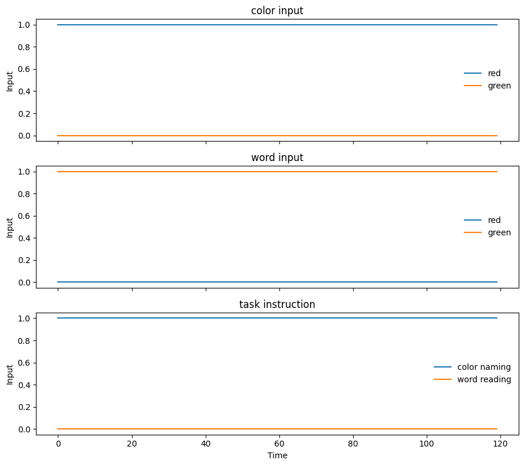
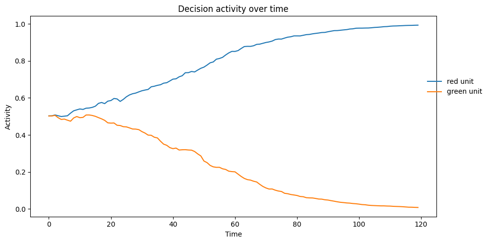
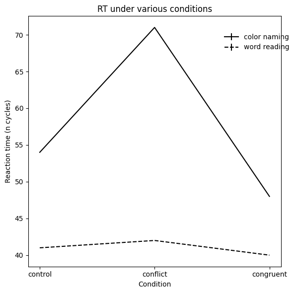

7.1 Stroop Model#
Introduction#
Pat your head and rub your belly at the same time. Unless you have practiced this odd exercise you will get conflict between the motor commands and quickly end up rubbing your head while also rubbing your belly, OR patting your belly while also patting your head. As a more difficult exercise, while sitting, lift your right foot and repeatedly rotate it clockwise while simultaneously tracing a counterclockwise circle in the air with your right hand. Contrast the difficulty of this task with a contralateral attempt, using your left foot and right hand (or right hand and left foot). Action is an obvious bottleneck – if you see a threat and try to both “flight” and “fight” at the very same time, the results will look funny and be ineffective. Some of our cognitive capacity limitations could be byproducts of the need to select singular coherent plans of action. In this lab we will begin thinking about how multiple psychological processes combine and interact, and how to model what happens when signals and processing conflict. A classic example is the Stroop task.
Attention, Automaticity, & Control#
Each of your eyes has about 120 million light-sensitive receptors on the retina, receiving input around 10 times per second. Between your two eyes and all your other sensory receptors (smell, taste, touch, sound), you are receiving many billions of units of stimulation every second. Not all of this information makes it into your brain – for example, before information exits your eye it has already been processed and compressed down to the firing output of 10 million retinal ganglion cells. Still this is a torrent of information, and you can only be consciously aware and act upon a tiny fraction of all the incoming signals. Attention is a collection of processing mechanisms that work together to filter, prioritize, and select a relevant subset of the incoming information.
Psychologists and neuroscientists have extensively documented the capacity limits of human cognition, but we do not yet fully understand all the sources of capacity limits. Change detection tasks (“spot the difference” between two images) and multiple object tracking tasks (keep track of moving targets among visually identical moving distractors) demonstrate severely limited awareness (e.g. around 1 object identity, and 3-4 object locations). Building models can help us understand these limits.
Cognitive processes that do not require the limited resources of attention can operate automatically. Training over time can sometimes transfer an effortful and attention-demanding task to become automatic. For literate and educated people, reading is one of the most highly trained activities that we perform, and it becomes automatic. The Stroop task pits the automaticity of reading against the somewhat less trained task of naming colors.
Setup and Installation
%%capture
%pip install psyneulink
%pip install stroop
import psyneulink as pnl
import numpy as np
import matplotlib.pyplot as plt
A simplified Stroop Model - Linear Stroop#
In this section, we will study a simple linear network, without hidden units. There are two input layers correspond to color inputs and word inputs, and they map to an output layer.
Each layer has two units, representing red and green. For example, [1, 0] for the color input layer means the stimulus has red color. [0, 1] for the word input means the word is green (but the color of the word is controlled by the color input). And the activity for the output layer can be viewed as the response. For example, [.8, .1] can be thought as having stronger “red response” (than “green response”).
Here, we set the strength of the “word” processing 1.5 higher than the “color” processing. This means that the word stimulus input will have a stronger effect on the response layer than the color stimulus input.
# set the strength of the two processing pathways
strength_color_processing = 1
strength_word_processing = 1.5
# input layers
color_inp = pnl.TransferMechanism(
default_variable=[0, 0],
function=pnl.Linear(slope=strength_color_processing),
name="Color"
)
word_inp = pnl.TransferMechanism(
default_variable=[0, 0],
function=pnl.Linear(slope=strength_word_processing),
name="Word"
)
# output layer
response = pnl.TransferMechanism(
default_variable=[0, 0],
function=pnl.Linear(slope=1),
name="Response"
)
# Place mechanisms and projections in composition
linear_stroop = pnl.Composition(name="Linear Stroop")
linear_stroop.add_linear_processing_pathway(pathway = [color_inp, response])
linear_stroop.add_linear_processing_pathway(pathway = [word_inp, response])
<psyneulink.core.compositions.pathway.Pathway at 0x7ff8acf61e10>
linear_stroop.show_graph(output_fmt = 'jupyter')
---------------------------------------------------------------------------
FileNotFoundError Traceback (most recent call last)
File /opt/hostedtoolcache/Python/3.11.15/x64/lib/python3.11/site-packages/graphviz/backend/execute.py:76, in run_check(cmd, input_lines, encoding, quiet, **kwargs)
75 kwargs['stdout'] = kwargs['stderr'] = subprocess.PIPE
---> 76 proc = _run_input_lines(cmd, input_lines, kwargs=kwargs)
77 else:
File /opt/hostedtoolcache/Python/3.11.15/x64/lib/python3.11/site-packages/graphviz/backend/execute.py:96, in _run_input_lines(cmd, input_lines, kwargs)
95 def _run_input_lines(cmd, input_lines, *, kwargs):
---> 96 popen = subprocess.Popen(cmd, stdin=subprocess.PIPE, **kwargs)
98 stdin_write = popen.stdin.write
File /opt/hostedtoolcache/Python/3.11.15/x64/lib/python3.11/subprocess.py:1026, in Popen.__init__(self, args, bufsize, executable, stdin, stdout, stderr, preexec_fn, close_fds, shell, cwd, env, universal_newlines, startupinfo, creationflags, restore_signals, start_new_session, pass_fds, user, group, extra_groups, encoding, errors, text, umask, pipesize, process_group)
1023 self.stderr = io.TextIOWrapper(self.stderr,
1024 encoding=encoding, errors=errors)
-> 1026 self._execute_child(args, executable, preexec_fn, close_fds,
1027 pass_fds, cwd, env,
1028 startupinfo, creationflags, shell,
1029 p2cread, p2cwrite,
1030 c2pread, c2pwrite,
1031 errread, errwrite,
1032 restore_signals,
1033 gid, gids, uid, umask,
1034 start_new_session, process_group)
1035 except:
1036 # Cleanup if the child failed starting.
File /opt/hostedtoolcache/Python/3.11.15/x64/lib/python3.11/subprocess.py:1955, in Popen._execute_child(self, args, executable, preexec_fn, close_fds, pass_fds, cwd, env, startupinfo, creationflags, shell, p2cread, p2cwrite, c2pread, c2pwrite, errread, errwrite, restore_signals, gid, gids, uid, umask, start_new_session, process_group)
1954 if err_filename is not None:
-> 1955 raise child_exception_type(errno_num, err_msg, err_filename)
1956 else:
FileNotFoundError: [Errno 2] No such file or directory: PosixPath('dot')
The above exception was the direct cause of the following exception:
ExecutableNotFound Traceback (most recent call last)
File /opt/hostedtoolcache/Python/3.11.15/x64/lib/python3.11/site-packages/IPython/core/formatters.py:1036, in MimeBundleFormatter.__call__(self, obj, include, exclude)
1033 method = get_real_method(obj, self.print_method)
1035 if method is not None:
-> 1036 return method(include=include, exclude=exclude)
1037 return None
1038 else:
File /opt/hostedtoolcache/Python/3.11.15/x64/lib/python3.11/site-packages/graphviz/jupyter_integration.py:98, in JupyterIntegration._repr_mimebundle_(self, include, exclude, **_)
96 include = set(include) if include is not None else {self._jupyter_mimetype}
97 include -= set(exclude or [])
---> 98 return {mimetype: getattr(self, method_name)()
99 for mimetype, method_name in MIME_TYPES.items()
100 if mimetype in include}
File /opt/hostedtoolcache/Python/3.11.15/x64/lib/python3.11/site-packages/graphviz/jupyter_integration.py:98, in <dictcomp>(.0)
96 include = set(include) if include is not None else {self._jupyter_mimetype}
97 include -= set(exclude or [])
---> 98 return {mimetype: getattr(self, method_name)()
99 for mimetype, method_name in MIME_TYPES.items()
100 if mimetype in include}
File /opt/hostedtoolcache/Python/3.11.15/x64/lib/python3.11/site-packages/graphviz/jupyter_integration.py:112, in JupyterIntegration._repr_image_svg_xml(self)
110 def _repr_image_svg_xml(self) -> str:
111 """Return the rendered graph as SVG string."""
--> 112 return self.pipe(format='svg', encoding=SVG_ENCODING)
File /opt/hostedtoolcache/Python/3.11.15/x64/lib/python3.11/site-packages/graphviz/piping.py:104, in Pipe.pipe(self, format, renderer, formatter, neato_no_op, quiet, engine, encoding)
55 def pipe(self,
56 format: typing.Optional[str] = None,
57 renderer: typing.Optional[str] = None,
(...) 61 engine: typing.Optional[str] = None,
62 encoding: typing.Optional[str] = None) -> typing.Union[bytes, str]:
63 """Return the source piped through the Graphviz layout command.
64
65 Args:
(...) 102 '<?xml version='
103 """
--> 104 return self._pipe_legacy(format,
105 renderer=renderer,
106 formatter=formatter,
107 neato_no_op=neato_no_op,
108 quiet=quiet,
109 engine=engine,
110 encoding=encoding)
File /opt/hostedtoolcache/Python/3.11.15/x64/lib/python3.11/site-packages/graphviz/_tools.py:185, in deprecate_positional_args.<locals>.decorator.<locals>.wrapper(*args, **kwargs)
177 wanted = ', '.join(f'{name}={value!r}'
178 for name, value in deprecated.items())
179 warnings.warn(f'The signature of {func_name} will be reduced'
180 f' to {supported_number} positional arg{s_}{qualification}'
181 f' {list(supported)}: pass {wanted} as keyword arg{s_}',
182 stacklevel=stacklevel,
183 category=category)
--> 185 return func(*args, **kwargs)
File /opt/hostedtoolcache/Python/3.11.15/x64/lib/python3.11/site-packages/graphviz/piping.py:121, in Pipe._pipe_legacy(self, format, renderer, formatter, neato_no_op, quiet, engine, encoding)
112 @_tools.deprecate_positional_args(supported_number=1, ignore_arg='self')
113 def _pipe_legacy(self,
114 format: typing.Optional[str] = None,
(...) 119 engine: typing.Optional[str] = None,
120 encoding: typing.Optional[str] = None) -> typing.Union[bytes, str]:
--> 121 return self._pipe_future(format,
122 renderer=renderer,
123 formatter=formatter,
124 neato_no_op=neato_no_op,
125 quiet=quiet,
126 engine=engine,
127 encoding=encoding)
File /opt/hostedtoolcache/Python/3.11.15/x64/lib/python3.11/site-packages/graphviz/piping.py:149, in Pipe._pipe_future(self, format, renderer, formatter, neato_no_op, quiet, engine, encoding)
146 if encoding is not None:
147 if codecs.lookup(encoding) is codecs.lookup(self.encoding):
148 # common case: both stdin and stdout need the same encoding
--> 149 return self._pipe_lines_string(*args, encoding=encoding, **kwargs)
150 try:
151 raw = self._pipe_lines(*args, input_encoding=self.encoding, **kwargs)
File /opt/hostedtoolcache/Python/3.11.15/x64/lib/python3.11/site-packages/graphviz/backend/piping.py:212, in pipe_lines_string(engine, format, input_lines, encoding, renderer, formatter, neato_no_op, quiet)
206 cmd = dot_command.command(engine, format,
207 renderer=renderer,
208 formatter=formatter,
209 neato_no_op=neato_no_op)
210 kwargs = {'input_lines': input_lines, 'encoding': encoding}
--> 212 proc = execute.run_check(cmd, capture_output=True, quiet=quiet, **kwargs)
213 return proc.stdout
File /opt/hostedtoolcache/Python/3.11.15/x64/lib/python3.11/site-packages/graphviz/backend/execute.py:81, in run_check(cmd, input_lines, encoding, quiet, **kwargs)
79 except OSError as e:
80 if e.errno == errno.ENOENT:
---> 81 raise ExecutableNotFound(cmd) from e
82 raise
84 if not quiet and proc.stderr:
ExecutableNotFound: failed to execute PosixPath('dot'), make sure the Graphviz executables are on your systems' PATH
<graphviz.graphs.Digraph at 0x7ff8acf75950>
Let’s see the responses to some example stimuli:
Red
Red
XXX
Green
Green
Green
Categorize the above stimuli into “neutral”, “congruent” and “incongruent/conflict” categories
✅ Solution
Red - incongruent
Red - congruent
XXX - neutral
Green - congruent
Green - incongruent
Green - neutral
# define all stimuli
red = [1, 0]
green = [0, 1]
null = [0, 0]
g_r = {color_inp: green, word_inp: red}
r_r = {color_inp: red, word_inp: red}
r_n = {color_inp: red, word_inp: null}
g_g = {color_inp: green, word_inp: green}
r_g = {color_inp: red, word_inp: green}
n_g = {color_inp: null, word_inp: green}
all_stimuli = [g_r, r_r, r_n, g_g, r_g, n_g]
# run the model for all conditions
responses = []
for i, stimuli in enumerate(all_stimuli):
response = linear_stroop.run(stimuli)
responses.append(response)
print(f'Condition: {all_stimuli[i]} \t Response = {response}')
Condition: {(TransferMechanism Color): [0, 1], (TransferMechanism Word): [1, 0]} Response = [[1.5 1. ]]
Condition: {(TransferMechanism Color): [1, 0], (TransferMechanism Word): [1, 0]} Response = [[2.5 0. ]]
Condition: {(TransferMechanism Color): [1, 0], (TransferMechanism Word): [0, 0]} Response = [[1. 0.]]
Condition: {(TransferMechanism Color): [0, 1], (TransferMechanism Word): [0, 1]} Response = [[0. 2.5]]
Condition: {(TransferMechanism Color): [1, 0], (TransferMechanism Word): [0, 1]} Response = [[1. 1.5]]
Condition: {(TransferMechanism Color): [0, 0], (TransferMechanism Word): [0, 1]} Response = [[0. 1.5]]
Interpret the data above. How does the model “respond” to each stimulus? Why does it respond in this way?
✅ Solution
Red -> red
Red -> red
XXX -> red
Green -> green
Green -> green
Green -> green
It “ignores” the color of the word and always responds with the word. This is because the strength of the word processing is higher than the color processing.
A more complex Stroop Model - Adding the task demand unit#
The above model does not capture “control”. It always responds with the word even if the “task” is to respond to the color of the word. Here, we will add a “task demand” unit that will add activity to the color processing pathway or to the word processing pathway.
The weights and parameters are adapted from Cohen et al. (1990).
# Input units
color_inp = pnl.TransferMechanism(name='Color Input', default_variable=[0, 0])
word_inp = pnl.TransferMechanism(name='Word Input', default_variable=[0, 0])
# Here, we have an additional task demand unit
task_demand = pnl.TransferMechanism(name='Task Demand', default_variable=[0, 0])
# We add a hidden layer in that will add the task demand activity to the color or word processing
color_hidden = pnl.TransferMechanism(
default_variable=[0, 0], function=pnl.Logistic(gain=1., bias=-4.), name='Color hidden')
word_hidden = pnl.TransferMechanism(
default_variable=[0, 0], function=pnl.Logistic(gain=1., bias=-4.), name='Word hidden')
# We add a response layer, just like before (Here we use a different function to make the response units adapt a value between 0 and 1)
response = pnl.TransferMechanism(
default_variable=[0, 0], function=pnl.Logistic, name='Response')
# We add projections
# Input to hidden
wts_clr_ih = pnl.MappingProjection(
matrix=[[2.2, -2.2], [-2.2, 2.2]], name='Color input to hidden')
wts_wrd_ih = pnl.MappingProjection(
matrix=[[2.6, -2.6], [-2.6, 2.6]], name='Word input to hidden')
# Task demand to hidden
wts_tc = pnl.MappingProjection(
matrix=[[4.0, 4.0], [0, 0]], name='Color naming')
wts_tw = pnl.MappingProjection(
matrix=[[0, 0], [4.0, 4.0]], name='Word reading')
# Hidden to response
wts_clr_r = pnl.MappingProjection(
matrix=[[1.3, -1.3], [-1.3, 1.3]], name='Color hidden to Response')
wts_wrd_r = pnl.MappingProjection(
matrix=[[2.5, -2.5], [-2.5, 2.5]], name='Word hidden to Response')
# build the model
complex_stroop = pnl.Composition(name='Complex Stroop')
# pathways
complex_stroop.add_linear_processing_pathway([color_inp, wts_clr_ih, color_hidden])
complex_stroop.add_linear_processing_pathway([word_inp, wts_wrd_ih, word_hidden])
complex_stroop.add_linear_processing_pathway([task_demand, wts_tc, color_hidden])
complex_stroop.add_linear_processing_pathway([task_demand, wts_tw, word_hidden])
complex_stroop.add_linear_processing_pathway([color_hidden, wts_clr_r, response])
complex_stroop.add_linear_processing_pathway([word_hidden, wts_wrd_r, response])
<psyneulink.core.compositions.pathway.Pathway at 0x7ff8ac327ed0>
complex_stroop.show_graph(output_fmt = 'jupyter')
---------------------------------------------------------------------------
FileNotFoundError Traceback (most recent call last)
File /opt/hostedtoolcache/Python/3.11.15/x64/lib/python3.11/site-packages/graphviz/backend/execute.py:76, in run_check(cmd, input_lines, encoding, quiet, **kwargs)
75 kwargs['stdout'] = kwargs['stderr'] = subprocess.PIPE
---> 76 proc = _run_input_lines(cmd, input_lines, kwargs=kwargs)
77 else:
File /opt/hostedtoolcache/Python/3.11.15/x64/lib/python3.11/site-packages/graphviz/backend/execute.py:96, in _run_input_lines(cmd, input_lines, kwargs)
95 def _run_input_lines(cmd, input_lines, *, kwargs):
---> 96 popen = subprocess.Popen(cmd, stdin=subprocess.PIPE, **kwargs)
98 stdin_write = popen.stdin.write
File /opt/hostedtoolcache/Python/3.11.15/x64/lib/python3.11/subprocess.py:1026, in Popen.__init__(self, args, bufsize, executable, stdin, stdout, stderr, preexec_fn, close_fds, shell, cwd, env, universal_newlines, startupinfo, creationflags, restore_signals, start_new_session, pass_fds, user, group, extra_groups, encoding, errors, text, umask, pipesize, process_group)
1023 self.stderr = io.TextIOWrapper(self.stderr,
1024 encoding=encoding, errors=errors)
-> 1026 self._execute_child(args, executable, preexec_fn, close_fds,
1027 pass_fds, cwd, env,
1028 startupinfo, creationflags, shell,
1029 p2cread, p2cwrite,
1030 c2pread, c2pwrite,
1031 errread, errwrite,
1032 restore_signals,
1033 gid, gids, uid, umask,
1034 start_new_session, process_group)
1035 except:
1036 # Cleanup if the child failed starting.
File /opt/hostedtoolcache/Python/3.11.15/x64/lib/python3.11/subprocess.py:1955, in Popen._execute_child(self, args, executable, preexec_fn, close_fds, pass_fds, cwd, env, startupinfo, creationflags, shell, p2cread, p2cwrite, c2pread, c2pwrite, errread, errwrite, restore_signals, gid, gids, uid, umask, start_new_session, process_group)
1954 if err_filename is not None:
-> 1955 raise child_exception_type(errno_num, err_msg, err_filename)
1956 else:
FileNotFoundError: [Errno 2] No such file or directory: PosixPath('dot')
The above exception was the direct cause of the following exception:
ExecutableNotFound Traceback (most recent call last)
File /opt/hostedtoolcache/Python/3.11.15/x64/lib/python3.11/site-packages/IPython/core/formatters.py:1036, in MimeBundleFormatter.__call__(self, obj, include, exclude)
1033 method = get_real_method(obj, self.print_method)
1035 if method is not None:
-> 1036 return method(include=include, exclude=exclude)
1037 return None
1038 else:
File /opt/hostedtoolcache/Python/3.11.15/x64/lib/python3.11/site-packages/graphviz/jupyter_integration.py:98, in JupyterIntegration._repr_mimebundle_(self, include, exclude, **_)
96 include = set(include) if include is not None else {self._jupyter_mimetype}
97 include -= set(exclude or [])
---> 98 return {mimetype: getattr(self, method_name)()
99 for mimetype, method_name in MIME_TYPES.items()
100 if mimetype in include}
File /opt/hostedtoolcache/Python/3.11.15/x64/lib/python3.11/site-packages/graphviz/jupyter_integration.py:98, in <dictcomp>(.0)
96 include = set(include) if include is not None else {self._jupyter_mimetype}
97 include -= set(exclude or [])
---> 98 return {mimetype: getattr(self, method_name)()
99 for mimetype, method_name in MIME_TYPES.items()
100 if mimetype in include}
File /opt/hostedtoolcache/Python/3.11.15/x64/lib/python3.11/site-packages/graphviz/jupyter_integration.py:112, in JupyterIntegration._repr_image_svg_xml(self)
110 def _repr_image_svg_xml(self) -> str:
111 """Return the rendered graph as SVG string."""
--> 112 return self.pipe(format='svg', encoding=SVG_ENCODING)
File /opt/hostedtoolcache/Python/3.11.15/x64/lib/python3.11/site-packages/graphviz/piping.py:104, in Pipe.pipe(self, format, renderer, formatter, neato_no_op, quiet, engine, encoding)
55 def pipe(self,
56 format: typing.Optional[str] = None,
57 renderer: typing.Optional[str] = None,
(...) 61 engine: typing.Optional[str] = None,
62 encoding: typing.Optional[str] = None) -> typing.Union[bytes, str]:
63 """Return the source piped through the Graphviz layout command.
64
65 Args:
(...) 102 '<?xml version='
103 """
--> 104 return self._pipe_legacy(format,
105 renderer=renderer,
106 formatter=formatter,
107 neato_no_op=neato_no_op,
108 quiet=quiet,
109 engine=engine,
110 encoding=encoding)
File /opt/hostedtoolcache/Python/3.11.15/x64/lib/python3.11/site-packages/graphviz/_tools.py:185, in deprecate_positional_args.<locals>.decorator.<locals>.wrapper(*args, **kwargs)
177 wanted = ', '.join(f'{name}={value!r}'
178 for name, value in deprecated.items())
179 warnings.warn(f'The signature of {func_name} will be reduced'
180 f' to {supported_number} positional arg{s_}{qualification}'
181 f' {list(supported)}: pass {wanted} as keyword arg{s_}',
182 stacklevel=stacklevel,
183 category=category)
--> 185 return func(*args, **kwargs)
File /opt/hostedtoolcache/Python/3.11.15/x64/lib/python3.11/site-packages/graphviz/piping.py:121, in Pipe._pipe_legacy(self, format, renderer, formatter, neato_no_op, quiet, engine, encoding)
112 @_tools.deprecate_positional_args(supported_number=1, ignore_arg='self')
113 def _pipe_legacy(self,
114 format: typing.Optional[str] = None,
(...) 119 engine: typing.Optional[str] = None,
120 encoding: typing.Optional[str] = None) -> typing.Union[bytes, str]:
--> 121 return self._pipe_future(format,
122 renderer=renderer,
123 formatter=formatter,
124 neato_no_op=neato_no_op,
125 quiet=quiet,
126 engine=engine,
127 encoding=encoding)
File /opt/hostedtoolcache/Python/3.11.15/x64/lib/python3.11/site-packages/graphviz/piping.py:149, in Pipe._pipe_future(self, format, renderer, formatter, neato_no_op, quiet, engine, encoding)
146 if encoding is not None:
147 if codecs.lookup(encoding) is codecs.lookup(self.encoding):
148 # common case: both stdin and stdout need the same encoding
--> 149 return self._pipe_lines_string(*args, encoding=encoding, **kwargs)
150 try:
151 raw = self._pipe_lines(*args, input_encoding=self.encoding, **kwargs)
File /opt/hostedtoolcache/Python/3.11.15/x64/lib/python3.11/site-packages/graphviz/backend/piping.py:212, in pipe_lines_string(engine, format, input_lines, encoding, renderer, formatter, neato_no_op, quiet)
206 cmd = dot_command.command(engine, format,
207 renderer=renderer,
208 formatter=formatter,
209 neato_no_op=neato_no_op)
210 kwargs = {'input_lines': input_lines, 'encoding': encoding}
--> 212 proc = execute.run_check(cmd, capture_output=True, quiet=quiet, **kwargs)
213 return proc.stdout
File /opt/hostedtoolcache/Python/3.11.15/x64/lib/python3.11/site-packages/graphviz/backend/execute.py:81, in run_check(cmd, input_lines, encoding, quiet, **kwargs)
79 except OSError as e:
80 if e.errno == errno.ENOENT:
---> 81 raise ExecutableNotFound(cmd) from e
82 raise
84 if not quiet and proc.stderr:
ExecutableNotFound: failed to execute PosixPath('dot'), make sure the Graphviz executables are on your systems' PATH
<graphviz.graphs.Digraph at 0x7ff8acc67f10>
Make sure you understand the weights assigned to the matrices. Why are there negative weights? What do they represent?
Hint: Try to interpret “how” activation is flowing. What is the sender-unit and what is the receiver-unit?
✅ Solution
Example: Color input to hidden:
wts_clr_ih = pnl.MappingProjection(
matrix=[[2.2, -2.2], [-2.2, 2.2]], name='Color input to hidden')
This matrix is responsible for the flow of activation from the color input to the color hidden unit. For example, if the color input is [1, 0] (red), the first unit (red) of the color hidden layer will receive an activation of 2.2. However, the second unit (green) of the color hidden layer will be “inhibited” and receive an activation of -2.2.
The negative weights are a sort of inhibition (not between units in the same layer, but between units in different layers). The input units not only “activate” their respective hidden units, but also “inhibit” the other hidden unit.
The activation function of the hidden units is a logistic function with a bias of ‘-4’. Suspiciously, the task demand unit has a weight of ‘4’ to the hidden units. Can you guess if this is a coincidence or if there is a reason behind this?
💡 Hint
Remember, the form of the logistic function:

✅ Solution
The bias of -4 means that an activation between 0 and 1 will not activate the hidden unit by a lot. The logistic function is not very “sensitive” in the area between -4 and -3. However, adding exactly 4 to the input via the task demand unit will put the hidden unit into the sensitive area of the logistic function. In this sense the task demand unit “modulates” the behaviour of the hidden units by putting them into a sensitive area of the logistic function.
Let’s see the responses to some example stimuli to see if the model is working as expected.
red = [1, 0]
green = [0, 1]
color_naming = [1, 0]
word_naming = [0, 1]
# Congruent stimuli for both color naming and word reading:
con_col = {color_inp: red, word_inp: red, task_demand: color_naming}
con_word = {color_inp: red, word_inp: red, task_demand: word_naming}
# Incongruent stimuli for both color naming and word reading:
inc_col = {color_inp: red, word_inp: green, task_demand: color_naming}
inc_word = {color_inp: red, word_inp: green, task_demand: word_naming}
all_stimuli = [con_col, con_word, inc_col, inc_word]
Before running the model, can you “order” the stimuli from the responses with the expected highest activation to the lowest activation?
# run the model for all conditions
for stimuli in all_stimuli:
response = complex_stroop.run(stimuli)
print(f'Condition: {stimuli} \t Response = {response}')
Condition: {(TransferMechanism Color Input): [1, 0], (TransferMechanism Word Input): [1, 0], (TransferMechanism Task Demand): [1, 0]} Response = [[0.82226846 0.17773154]]
Condition: {(TransferMechanism Color Input): [1, 0], (TransferMechanism Word Input): [1, 0], (TransferMechanism Task Demand): [0, 1]} Response = [[0.91182152 0.08817848]]
Condition: {(TransferMechanism Color Input): [1, 0], (TransferMechanism Word Input): [0, 1], (TransferMechanism Task Demand): [1, 0]} Response = [[0.63402068 0.36597932]]
Condition: {(TransferMechanism Color Input): [1, 0], (TransferMechanism Word Input): [0, 1], (TransferMechanism Task Demand): [0, 1]} Response = [[0.12211692 0.87788308]]
The full stroop model#
Here’s a qualitative replication of the original stroop model. Compared to the previous simplification (the model without recurrence), this network has explicit mechanism (on top of the output layer) for integrating information (should I make red response or green response?) over time to make a response. This is achieved by the leaky competing accumulator. And here’s a toy demo of LCA.
The important point here is that now the model has temporal dynamics, and it can be used to model reaction time very naturally. In comparison, for the previous model, we had to hypothesize the relation between output activity (of red vs. green) and reaction time.
# Input units
color_inp = pnl.TransferMechanism(name='Color Input', default_variable=[0, 0])
word_inp = pnl.TransferMechanism(name='Word Input', default_variable=[0, 0])
task_demand = pnl.TransferMechanism(name='Task Demand', default_variable=[0, 0])
# Here, we integrate the activity instead of just passing it through
INTEGRATION_RATE = .2
UNIT_NOISE_STD = .01
DEC_NOISE_STD = .1
LEAK = 0
COMPETITION = 1
color_hidden = pnl.TransferMechanism(
default_variable=[0, 0],
function=pnl.Logistic(gain=1., bias=-4.),
integrator_mode=True,
integration_rate=INTEGRATION_RATE,
noise=pnl.NormalDist(standard_deviation=UNIT_NOISE_STD).function,
name='Color hidden')
word_hidden = pnl.TransferMechanism(
default_variable=[0, 0],
function=pnl.Logistic(gain=1., bias=-4.),
integrator_mode=True,
integration_rate=INTEGRATION_RATE,
noise=pnl.NormalDist(standard_deviation=UNIT_NOISE_STD).function,
name='Word hidden')
# The same is true for the output layer (for clarity, we use a different name than response)
output = pnl.TransferMechanism(
default_variable=[0, 0],
function=pnl.Logistic,
integrator_mode=True,
integration_rate=INTEGRATION_RATE,
noise=pnl.NormalDist(standard_deviation=UNIT_NOISE_STD).function,
name='Output')
# In addition, we have a decision layer, which is implemented as leaky competing accumulator
# decision layer, some accumulator
decision = pnl.LCAMechanism(
default_variable=[0, 0],
leak=LEAK,
competition=COMPETITION,
noise=pnl.UniformToNormalDist(standard_deviation=DEC_NOISE_STD).function,
name='Decision'
)
# We add the same projections as before
# Input to hidden
wts_clr_ih = pnl.MappingProjection(
matrix=[[2.2, -2.2], [-2.2, 2.2]], name='Color input to hidden')
wts_wrd_ih = pnl.MappingProjection(
matrix=[[2.6, -2.6], [-2.6, 2.6]], name='Word input to hidden')
# Task demand to hidden
wts_tc = pnl.MappingProjection(
matrix=[[4.0, 4.0], [0, 0]], name='Color naming')
wts_tw = pnl.MappingProjection(
matrix=[[0, 0], [4.0, 4.0]], name='Word reading')
# Hidden to response
wts_clr_r = pnl.MappingProjection(
matrix=[[1.3, -1.3], [-1.3, 1.3]], name='Color hidden to Output')
wts_wrd_r = pnl.MappingProjection(
matrix=[[2.5, -2.5], [-2.5, 2.5]], name='Word hidden to Output')
# build the model
full_stroop = pnl.Composition(name='Complex Stroop')
# pathways
full_stroop.add_linear_processing_pathway([color_inp, wts_clr_ih, color_hidden])
full_stroop.add_linear_processing_pathway([word_inp, wts_wrd_ih, word_hidden])
full_stroop.add_linear_processing_pathway([task_demand, wts_tc, color_hidden])
full_stroop.add_linear_processing_pathway([task_demand, wts_tw, word_hidden])
full_stroop.add_linear_processing_pathway([color_hidden, wts_clr_r, output])
full_stroop.add_linear_processing_pathway([word_hidden, wts_wrd_r, output])
full_stroop.add_linear_processing_pathway([output, pnl.IDENTITY_MATRIX, decision])
<psyneulink.core.compositions.pathway.Pathway at 0x7ff8ab70aad0>
full_stroop.show_graph(output_fmt = 'jupyter')
---------------------------------------------------------------------------
FileNotFoundError Traceback (most recent call last)
File /opt/hostedtoolcache/Python/3.11.15/x64/lib/python3.11/site-packages/graphviz/backend/execute.py:76, in run_check(cmd, input_lines, encoding, quiet, **kwargs)
75 kwargs['stdout'] = kwargs['stderr'] = subprocess.PIPE
---> 76 proc = _run_input_lines(cmd, input_lines, kwargs=kwargs)
77 else:
File /opt/hostedtoolcache/Python/3.11.15/x64/lib/python3.11/site-packages/graphviz/backend/execute.py:96, in _run_input_lines(cmd, input_lines, kwargs)
95 def _run_input_lines(cmd, input_lines, *, kwargs):
---> 96 popen = subprocess.Popen(cmd, stdin=subprocess.PIPE, **kwargs)
98 stdin_write = popen.stdin.write
File /opt/hostedtoolcache/Python/3.11.15/x64/lib/python3.11/subprocess.py:1026, in Popen.__init__(self, args, bufsize, executable, stdin, stdout, stderr, preexec_fn, close_fds, shell, cwd, env, universal_newlines, startupinfo, creationflags, restore_signals, start_new_session, pass_fds, user, group, extra_groups, encoding, errors, text, umask, pipesize, process_group)
1023 self.stderr = io.TextIOWrapper(self.stderr,
1024 encoding=encoding, errors=errors)
-> 1026 self._execute_child(args, executable, preexec_fn, close_fds,
1027 pass_fds, cwd, env,
1028 startupinfo, creationflags, shell,
1029 p2cread, p2cwrite,
1030 c2pread, c2pwrite,
1031 errread, errwrite,
1032 restore_signals,
1033 gid, gids, uid, umask,
1034 start_new_session, process_group)
1035 except:
1036 # Cleanup if the child failed starting.
File /opt/hostedtoolcache/Python/3.11.15/x64/lib/python3.11/subprocess.py:1955, in Popen._execute_child(self, args, executable, preexec_fn, close_fds, pass_fds, cwd, env, startupinfo, creationflags, shell, p2cread, p2cwrite, c2pread, c2pwrite, errread, errwrite, restore_signals, gid, gids, uid, umask, start_new_session, process_group)
1954 if err_filename is not None:
-> 1955 raise child_exception_type(errno_num, err_msg, err_filename)
1956 else:
FileNotFoundError: [Errno 2] No such file or directory: PosixPath('dot')
The above exception was the direct cause of the following exception:
ExecutableNotFound Traceback (most recent call last)
File /opt/hostedtoolcache/Python/3.11.15/x64/lib/python3.11/site-packages/IPython/core/formatters.py:1036, in MimeBundleFormatter.__call__(self, obj, include, exclude)
1033 method = get_real_method(obj, self.print_method)
1035 if method is not None:
-> 1036 return method(include=include, exclude=exclude)
1037 return None
1038 else:
File /opt/hostedtoolcache/Python/3.11.15/x64/lib/python3.11/site-packages/graphviz/jupyter_integration.py:98, in JupyterIntegration._repr_mimebundle_(self, include, exclude, **_)
96 include = set(include) if include is not None else {self._jupyter_mimetype}
97 include -= set(exclude or [])
---> 98 return {mimetype: getattr(self, method_name)()
99 for mimetype, method_name in MIME_TYPES.items()
100 if mimetype in include}
File /opt/hostedtoolcache/Python/3.11.15/x64/lib/python3.11/site-packages/graphviz/jupyter_integration.py:98, in <dictcomp>(.0)
96 include = set(include) if include is not None else {self._jupyter_mimetype}
97 include -= set(exclude or [])
---> 98 return {mimetype: getattr(self, method_name)()
99 for mimetype, method_name in MIME_TYPES.items()
100 if mimetype in include}
File /opt/hostedtoolcache/Python/3.11.15/x64/lib/python3.11/site-packages/graphviz/jupyter_integration.py:112, in JupyterIntegration._repr_image_svg_xml(self)
110 def _repr_image_svg_xml(self) -> str:
111 """Return the rendered graph as SVG string."""
--> 112 return self.pipe(format='svg', encoding=SVG_ENCODING)
File /opt/hostedtoolcache/Python/3.11.15/x64/lib/python3.11/site-packages/graphviz/piping.py:104, in Pipe.pipe(self, format, renderer, formatter, neato_no_op, quiet, engine, encoding)
55 def pipe(self,
56 format: typing.Optional[str] = None,
57 renderer: typing.Optional[str] = None,
(...) 61 engine: typing.Optional[str] = None,
62 encoding: typing.Optional[str] = None) -> typing.Union[bytes, str]:
63 """Return the source piped through the Graphviz layout command.
64
65 Args:
(...) 102 '<?xml version='
103 """
--> 104 return self._pipe_legacy(format,
105 renderer=renderer,
106 formatter=formatter,
107 neato_no_op=neato_no_op,
108 quiet=quiet,
109 engine=engine,
110 encoding=encoding)
File /opt/hostedtoolcache/Python/3.11.15/x64/lib/python3.11/site-packages/graphviz/_tools.py:185, in deprecate_positional_args.<locals>.decorator.<locals>.wrapper(*args, **kwargs)
177 wanted = ', '.join(f'{name}={value!r}'
178 for name, value in deprecated.items())
179 warnings.warn(f'The signature of {func_name} will be reduced'
180 f' to {supported_number} positional arg{s_}{qualification}'
181 f' {list(supported)}: pass {wanted} as keyword arg{s_}',
182 stacklevel=stacklevel,
183 category=category)
--> 185 return func(*args, **kwargs)
File /opt/hostedtoolcache/Python/3.11.15/x64/lib/python3.11/site-packages/graphviz/piping.py:121, in Pipe._pipe_legacy(self, format, renderer, formatter, neato_no_op, quiet, engine, encoding)
112 @_tools.deprecate_positional_args(supported_number=1, ignore_arg='self')
113 def _pipe_legacy(self,
114 format: typing.Optional[str] = None,
(...) 119 engine: typing.Optional[str] = None,
120 encoding: typing.Optional[str] = None) -> typing.Union[bytes, str]:
--> 121 return self._pipe_future(format,
122 renderer=renderer,
123 formatter=formatter,
124 neato_no_op=neato_no_op,
125 quiet=quiet,
126 engine=engine,
127 encoding=encoding)
File /opt/hostedtoolcache/Python/3.11.15/x64/lib/python3.11/site-packages/graphviz/piping.py:149, in Pipe._pipe_future(self, format, renderer, formatter, neato_no_op, quiet, engine, encoding)
146 if encoding is not None:
147 if codecs.lookup(encoding) is codecs.lookup(self.encoding):
148 # common case: both stdin and stdout need the same encoding
--> 149 return self._pipe_lines_string(*args, encoding=encoding, **kwargs)
150 try:
151 raw = self._pipe_lines(*args, input_encoding=self.encoding, **kwargs)
File /opt/hostedtoolcache/Python/3.11.15/x64/lib/python3.11/site-packages/graphviz/backend/piping.py:212, in pipe_lines_string(engine, format, input_lines, encoding, renderer, formatter, neato_no_op, quiet)
206 cmd = dot_command.command(engine, format,
207 renderer=renderer,
208 formatter=formatter,
209 neato_no_op=neato_no_op)
210 kwargs = {'input_lines': input_lines, 'encoding': encoding}
--> 212 proc = execute.run_check(cmd, capture_output=True, quiet=quiet, **kwargs)
213 return proc.stdout
File /opt/hostedtoolcache/Python/3.11.15/x64/lib/python3.11/site-packages/graphviz/backend/execute.py:81, in run_check(cmd, input_lines, encoding, quiet, **kwargs)
79 except OSError as e:
80 if e.errno == errno.ENOENT:
---> 81 raise ExecutableNotFound(cmd) from e
82 raise
84 if not quiet and proc.stderr:
ExecutableNotFound: failed to execute PosixPath('dot'), make sure the Graphviz executables are on your systems' PATH
<graphviz.graphs.Digraph at 0x7ff8abeb09d0>
What is the “advantage” of using an integrator model in general? Can you think about manipulations that can hardly be implemented in a non-integrator model?
✅ Solution
The integrator model can be used to model temporal dynamics. This is valuable for reaction times, but also to test manipulations like different SOAs (stimulus-onset-asynchrony). For example, the word can be shown before it is colored or vice versa. There can also be a delay or “blanks” between the word and color. These manipulations can be implemented in an integrator model, but not in a non-integrator model.
For this lab, a former TA wrote a python library to help with constructing stroop stimuli, which is imported below.
You don’t need to understand what it does internally but if you want to see the internal, click here.
from stroop.stimulus import get_stimulus, TASKS, COLORS, CONDITIONS
# calculate experiment metadata
n_conditions = len(CONDITIONS)
n_tasks = len(TASKS)
n_colors = len(COLORS)
# constants
experiment_info = f"""
stroop experiment info
- {n_colors} colors:\t {COLORS}
- {n_colors} words:\t {COLORS}
- {n_tasks} tasks:\t {TASKS}
- {n_conditions} conditions:\t {CONDITIONS}
"""
print(experiment_info)
stroop experiment info
- 2 colors: ['red', 'green']
- 2 words: ['red', 'green']
- 2 tasks: ['color naming', 'word reading']
- 3 conditions: ['control', 'conflict', 'congruent']
Define the inputs
i.e. all CONDITIONS x TASKS for the experiment
# the length of the stimulus sequence
n_time_steps = 120
# color naming - cong
inputs_cn_con = get_stimulus(
color_inp, 'red', word_inp, 'red', task_demand, 'color naming', n_time_steps
)
# color naming - incong
inputs_cn_cfl = get_stimulus(
color_inp, 'red', word_inp, 'green', task_demand, 'color naming', n_time_steps
)
# color naming - control
inputs_cn_ctr = get_stimulus(
color_inp, 'red', word_inp, None, task_demand, 'color naming', n_time_steps
)
# word reading - cong
inputs_wr_con = get_stimulus(
color_inp, 'red', word_inp, 'red', task_demand, 'word reading', n_time_steps
)
# word reading - incong
inputs_wr_cfl = get_stimulus(
color_inp, 'green', word_inp, 'red', task_demand, 'word reading', n_time_steps
)
# word reading - control
inputs_wr_ctr = get_stimulus(
color_inp, None, word_inp, 'red', task_demand, 'word reading', n_time_steps
)
Visualize an input stimulus, note that the stimulus here is a sequence
# choose the condition you want to visualize
stimuli_list_plt = inputs_cn_cfl
# set the title and the nodes to plot
titles_plt = ['color input', 'word input', 'task instruction']
input_nodes_plt = [color_inp, word_inp]
# plot the data
f, axes = plt.subplots(3, 1, figsize=(9, 8), sharex=True)
for i, node_i in enumerate(input_nodes_plt):
for j in range(n_colors):
axes[i].plot(stimuli_list_plt[node_i][:, j])
axes[i].legend(['red', 'green'], frameon=False)
axes[2].plot(stimuli_list_plt[task_demand])
axes[2].legend(['color naming', 'word reading'], frameon=False)
# mark the plot
for i, ax in enumerate(axes):
ax.set_ylabel('Input')
ax.set_title(titles_plt[i])
axes[2].set_xlabel('Time')
axes[0].legend(['red', 'green'], frameon=False)
f.tight_layout()

Can you explain the plot above? What does each line present? What is the x-axis and y-axis?
✅ Solution
Since we are using an integrator model, we will use a sequence of inputs. The x-axis is the “time” or index of the input, the y-value is the input value for each of the units.
We run the model on a single stimulus to see how the activation evolves over time.
# run the model on one stimulus
inputs = inputs_cn_cfl
full_stroop.run(
context=999,
inputs=inputs,
num_trials=n_time_steps,
)
activation = full_stroop.results
f, ax = plt.subplots(1,1, figsize=(9,5))
for i in range(n_colors):
ax.plot(np.squeeze(activation)[:,i])
ax.set_title('Decision activity over time')
ax.set_xlabel('Time')
ax.set_ylabel('Activity')
f.legend(['%s unit' % c for c in COLORS], frameon=False, bbox_to_anchor=(1.1,.7))
f.tight_layout()

Let’s now run the model on various conditions and see how the model performs.
def run_model(execution_id, n_repeats, inputs, n_time_steps=100):
"""define how to run the model"""
acts = np.zeros((n_repeats, n_time_steps, 2))
for i in range(n_repeats):
print(f'{execution_id}', end=' ')
full_stroop.run(
context=execution_id,
inputs=inputs,
num_trials=n_time_steps,
)
execution_id += 1
# log acts
acts[i, :, :] = np.squeeze(full_stroop.results)
return acts, execution_id
execution_id = 100
n_repeats = 1
# combine the task stimuli
cn_input_list = [inputs_cn_ctr, inputs_cn_cfl, inputs_cn_con]
wr_input_list = [inputs_wr_ctr, inputs_wr_cfl, inputs_wr_con]
# preallocate variables to hold activity
A_cn = {condition: None for condition in CONDITIONS}
A_wr = {condition: None for condition in CONDITIONS}
# run all conditions, color naming
for i, condition in enumerate(CONDITIONS):
print(f'\nRunning color naming, condition = {condition}')
A_cn[condition], execution_id = run_model(execution_id,
n_repeats, cn_input_list[i]
)
# run all conditions, word reading
for i, condition in enumerate(CONDITIONS):
print(f'\nRunning word reading, condition = {condition}')
print(f'Execution ids:', end=' ')
A_wr[condition], execution_id = run_model(execution_id,
n_repeats, wr_input_list[i]
)
print('Done!')
Running color naming, condition = control
100
Running color naming, condition = conflict
101
Running color naming, condition = congruent
102
Running word reading, condition = control
Execution ids: 103
Running word reading, condition = conflict
Execution ids: 104
Running word reading, condition = congruent
Execution ids: 105
Done!
Here, we compute the Reaction Time (RT) for each condition. The RT is defined as the time when the activity of the decision layer exceeds a certain threshold (0.9).
def compute_rt(act, threshold=.9):
"""compute reaction time
take the activity of the decision layer...
check the earliest time point when activity > threshold...
call that RT
*RT=np.nan if timeout
"""
n_time_steps_, N_UNITS_ = np.shape(act)
rts = np.full(shape=(N_UNITS_,), fill_value=np.nan)
for i in range(N_UNITS_):
tps_pass_threshold = np.where(act[:, i] > threshold)[0]
if len(tps_pass_threshold) > 0:
rts[i] = tps_pass_threshold[0]
return np.nanmin(rts)
# compute RTs for color naming and word reading
threshold = .9
RTs_cn = {condition: None for condition in CONDITIONS}
RTs_wr = {condition: None for condition in CONDITIONS}
for i, condition in enumerate(CONDITIONS):
RTs_cn[condition] = np.array(
[compute_rt(A_cn[condition][i, :, :], threshold) for i in range(n_repeats)]
)
RTs_wr[condition] = np.array(
[compute_rt(A_wr[condition][i, :, :], threshold) for i in range(n_repeats)]
)
# organize data for plotting, color naming and word reading
mean_rt_cn = [np.nanmean(RTs_cn[condition]) for condition in CONDITIONS]
mean_rt_wr = [np.nanmean(RTs_wr[condition]) for condition in CONDITIONS]
std_rt_cn = [np.nanstd(RTs_cn[condition]) for condition in CONDITIONS]
std_rt_wr = [np.nanstd(RTs_wr[condition]) for condition in CONDITIONS]
xtick_vals = range(len(CONDITIONS))
Here, we recreate Figure 5 from Cohen et al. (1990).
# plot RT
f, ax = plt.subplots(1, 1, figsize=(6, 6))
ax.errorbar(
x=xtick_vals, y=mean_rt_cn, yerr=std_rt_cn,
label='color naming', color='black'
)
ax.errorbar(
x=xtick_vals, y=mean_rt_wr, yerr=std_rt_wr,
label='word reading', color='black', linestyle='--',
)
ax.set_ylabel('Reaction time (n cycles)')
ax.set_xticks(xtick_vals)
ax.set_xticklabels(CONDITIONS)
ax.set_xlabel('Condition')
ax.set_title('RT under various conditions')
f.legend(frameon=False, bbox_to_anchor=(1, .9))
f.tight_layout()

Create a similar model for 4 instead of 2 colors.